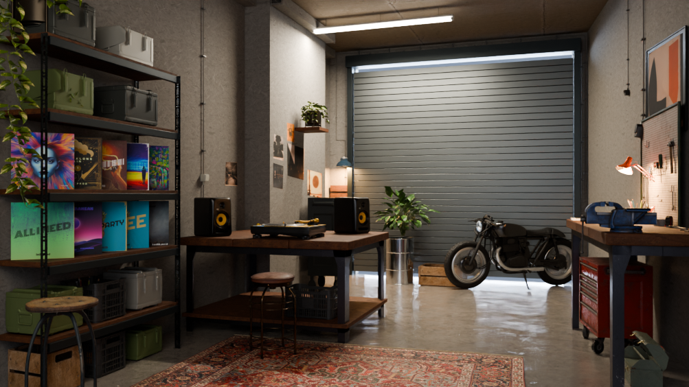

De werkplaatsWerkversie

Beelden uit de huidige 3D-scène in Blender. Nog in opbouw; nog geen Unreal-scène.
Naast het concept bekijken ↗
Beelden uit de huidige 3D-scène in Blender. Nog in opbouw; nog geen Unreal-scène.
Naast het concept bekijken ↗